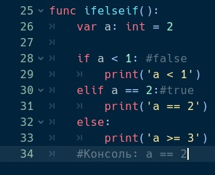
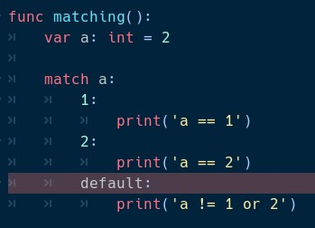
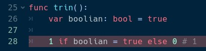

Оператор if проверяет выражение после себя. Если выражение возвращает true, то выполняется блок кода после if . Если условие не верно, то выполняется оператор elif. Он ведёт себя также как и оператор if, но этот оператор не обязателен. Операторов elif может быть сколько угодно. Если все операторы elif получили false, то выполняется оператор else

Оператор match проверяет соответствие переменной какому-либо значению. Каждое значение описывается отдельным блоком. C помощью знака нижнего подчёркивания ‘_’, можно задать блок, который выполнится в случае, если переменная не соответствует ни одному значению.

Тринарный оператор в GDscript имеет следующий вид: 1 if boolian = true else 0. Данное выражение вернёт единицу, если переменная boolian равняется true, иначе false
